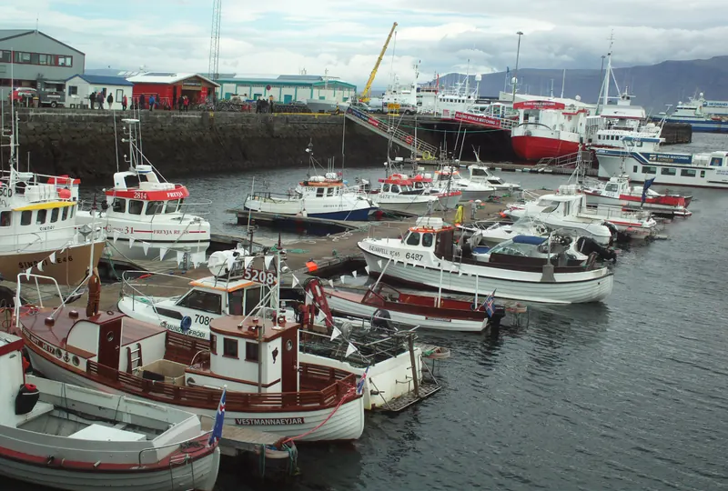

Donate
Keep the harbor lights on
Gifts would keep the pantry shelves stocked, the garden watered and the Lantern Rides cars on the road.
This is a demonstration. You cannot give money here.
Kindred Harbor is fictional. There is no checkout, no payment form and no way to send money from this website. The amounts below show how a real donation page might explain the difference a gift makes.
What a gift could do
Illustrative amounts Examples written for this demonstration, not real costs or appeals.
-
Illustrative gift of $15
A week of pantry basics
Rice, oats, tinned fish and fresh fruit for one family's shelf.
-
Illustrative gift of $40
A season of seeds
Seed packets, compost and labels for a classroom garden bed.
-
Illustrative gift of $100
Twenty Lantern Rides
Fuel and upkeep so volunteer drivers can say yes to every request.
Seasonal goal
Warm Hands Winter Drive
Each winter the drive gathers coats, hats and blankets. Volunteers wash, mend and sort them, then pass them on through the Harbor Pantry with no forms to fill in.
- Gather. Drop-off baskets at three places in town (sample locations).
- Mend. A Saturday sewing circle repairs what it can.
- Share. Everything goes out free, sized and labeled.
Sample progress Illustrative only.
Coats and blankets collected
412 of a 600 goal (illustrative): 68%
How a real nonprofit would earn your trust
A real donation page should make these things easy to check. Kindred Harbor is fictional, so the notes below describe what to look for rather than making claims.
Registration
A real charity would show its registration number and where you can verify it. Kindred Harbor has none: it is not registered anywhere.
Where money goes
Clear yearly accounts and a plain explanation of how gifts are spent.
Secure giving
Payments handled by a trusted, clearly named payment provider, never by a form like a demo page.
Prefer to give time instead? Explore volunteer roles